Accelerating Machine Learning with GPUs
Akshit Arora
Data Scientist @  | @_AkshitArora
| @_AkshitArora
Speed, UX, and Iteration
The Way to Win at Data Science
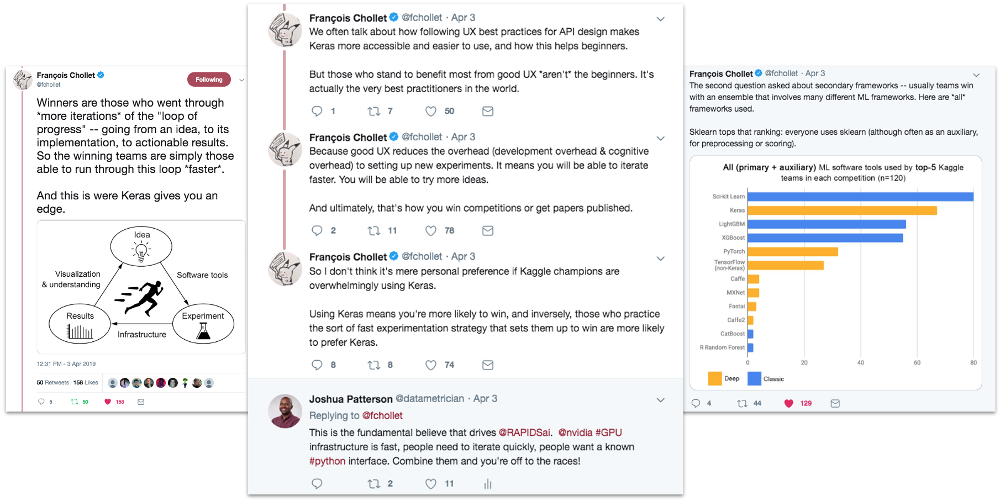Machine Learning Lifecycle
Also, Table of Contents
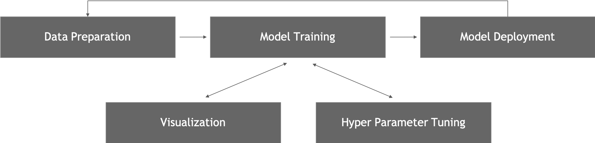Random Forests
Intuition
Random Forests
Example Dataset
Random Forests
Sub-sampled dataset 1 / 3
Random Forests
Sub-sampled dataset 2 / 3
Random Forests
Sub-sampled dataset 3 / 3
Random Forests
Building a decision tree
-
Finding the best particular split at a particular node involves two choices:
- the feature
- the split value for that feature
-
At each node, the algorithm uses a specified metric to estimate how much a potential split will improve the model.
- Classification task: Gini Impurity or Entropy.
- Regresion task: Mean Squared Error (MSE) or Mean Absolute Error (MAE)
- Continue splitting the nodes until either:
- all values in the subset mapping to that node are pure (e.g. all fruits are strawberries) OR
- some other conditions are met (e.g. max tree depth, max number of samples per tree etc.)
Random Forests
Measuring "Highest Improvement" at a split
A potential split S, defined by (feature split_value), will split this node’s dataset of ‘N’ rows into left and right subsets with N_left and N_right rows respectively. The improvement of Split S is computed as:
improvement = Gini PARENT - impurity
where impurity is:
impurity = N_left / N * Gini Left + N_right / N * Gini Right
Random Forests
What is Gini Impurity?
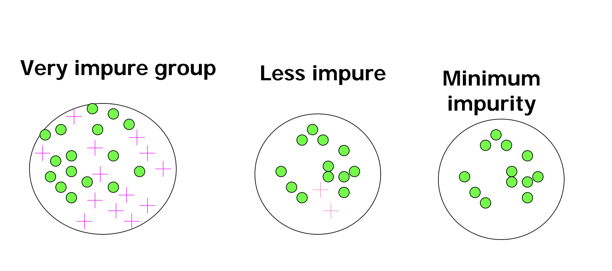 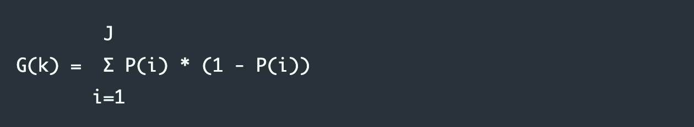Random Forests
Independent Decision Trees
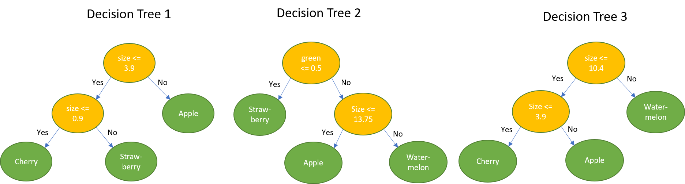Random Forests
sklearn implementation
from sklearn.ensemble import RandomForestClassifier as sklRF
from sklearn.metrics import accuracy_scores
import multiprocessing as mp
skl_rf_params = {
'n_estimators': 25,
'max_depth': 13,
'n_jobs': mp.cpu_count()
}
skl_rf = sklRF(**skl_rf_params)
skl_rf.fit(X_train, y_train)
y_pred = skl_rf.predict(X_test)
print("sklearn RF Accuracy Score: ", accuracy_score(y_pred, y_test))
Random Forests
Acceleration opportunities
- Independent decision tree development. Several trees can be built in parallel on a single GPU.
- Breadth-first approach, as opposed to depth-first. Building a full layer of the tree at a time.
- High performance split algorithms to select which values are explored for each feature+node combination.
Random Forests
Split Algorithm - Min/Max histograms
- A histogram is built for every feature for a tree node. Every feature’s data range [min, max] is split into n_bins equally sized bins. The end range of each bin is considered as a potential split value.
- With this approach, the split values for each feature are recomputed at each node, thus adapting to the data ranges at each tree node.
- The min/max algorithm also helps in isolating outliers in the data at an early stage during the tree building process.
Random Forests
Split Algorithm - Quantiles
- The quantiles split algorithm precomputes the potential split values for each feature once per tree, i.e., at the root node. Each feature (column) is sorted in ascending order, and split into n_bins such that each bin contains an equal portion of the root node’s dataset. The end range of each bin is considered as a potential split value.
- Thus, unlike min/max histograms where all bins have the same width, in quantiles all bins, except for the last one, have the same height for the root note, but are of variable width. As split values are precomputed once per tree, the quantile approach is faster than the min/max histogram algorithm.
- If, for a node deep in the tree, all feature values fall under a single bin, then no splitting can take place for that feature. A further optimization (supported with the quantile_per_tree Python option) is to compute the split values once per random forest, i.e., for the original non-bootstrapped dataset, rather than once per decision tree.
Random Forests
Parallel Execution
- Initialize a bit mask indicating which samples are contained in each node.
- Initialize a "node map" indicating which nodes are present at each level.
-
ForEach(tree_level):
- Find the node id of all data samples, using the bit mask.
- Compute the possible splits for all bins, all columns, and all nodes.
- Find the best split for each node.
- Update the bit mask and sparse node map to feed the next level.
Random Forests
RAPIDS cuML implementation
from cuML import RandomForestClassifier as cuRF
cu_rf_params = {
'n_estimators': 25,
'max_depth': 13,
'max_features': 8,
'n_bins': 15
}
cu_rf = cuRF(**cu_rf_params)
cu_rf.fit(X_train, y_train)
y_pred = cu_rf.predict(X_test)
print("cuML RF Accuracy Score: ", accuracy_score(y_pred, y_test))
Random Forests
Results - Benchmark Details
- RAPIDS cuML version 0.10 (single V100 16 GB GPU; with cuDF) vs. sklearn version 0.21.2 (80 CPU threads; with numpy).
- NVIDIA DGX-1 server with 8 x V100 (16 GB) GPUs and dual Xeon E5-2698v4@2.20GHz CPUs with 40 CPU cores in total.
- Higgs Dataset: 28 columns and 11M rows (randomly chosen 10.5M for training and 1000 rows for testing).
Random Forests
Results - Higgs Dataset
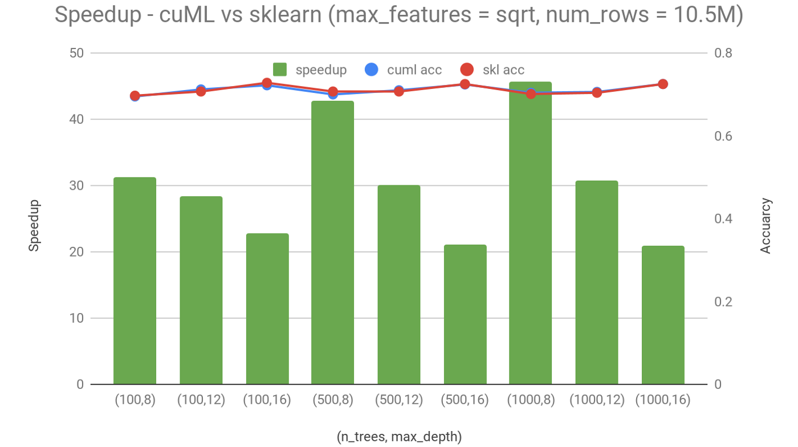Random Forests
Results - Synthetic Dataset
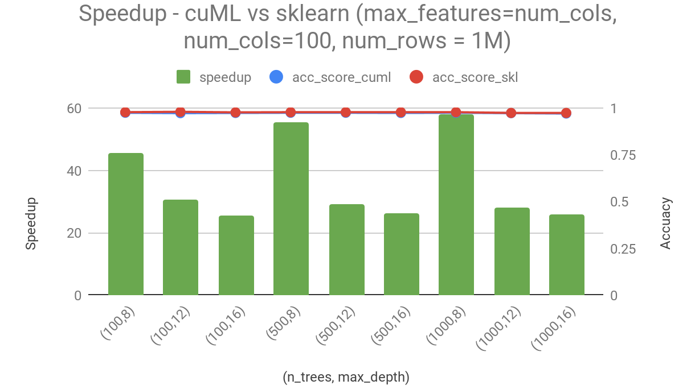Data Processing Evolution
Faster Data Access, Less Data Movement
Data Movement and Transformation
The Bane of Productivity and Performance
Learning from Apache Arrow
Data Processing Evolution
Faster Data Access, Less Data Movement
Open Source Data Science Ecosystem
Familiar Python APIs
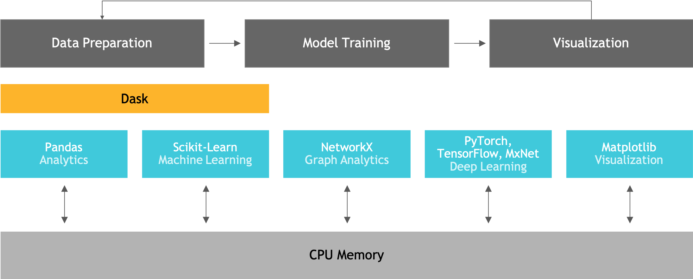RAPIDS
End-to-End GPU Accelerated Data Science
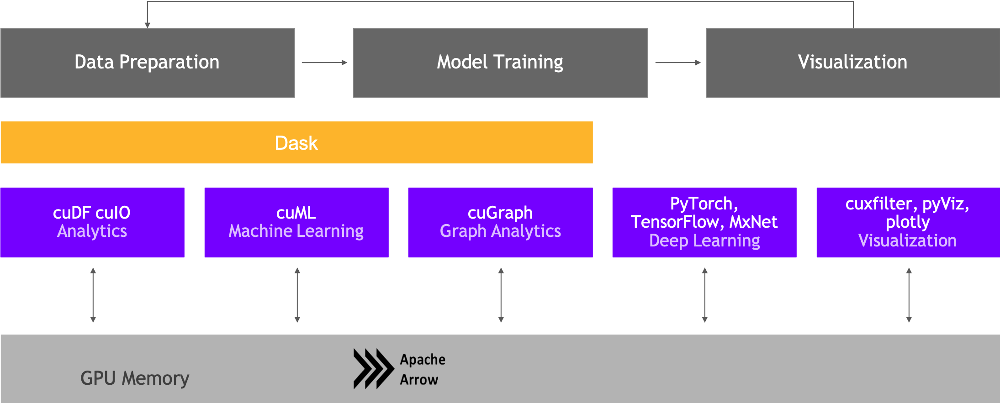Random Forests
Using cuDF for data loading
from cuML import RandomForestClassifier as cuRF
from cuml.preprocessing.model_selection import train_test_split
import cudf
data = cudf.read_csv('dataset.csv')
X_train, X_test, y_train, y_test = \
train_test_split(data, 'label', train_size=0.8)
cu_rf_params = {
'n_estimators': 25,
'max_depth': 13,
'max_features': 8,
'n_bins': 15
}
cu_rf = cuRF(**cu_rf_params)
cu_rf.fit(X_train, y_train)
y_pred = cu_rf.predict(X_test)
print("cuML RF Accuracy Score: ", accuracy_score(y_pred, y_test))
Why cuDF?
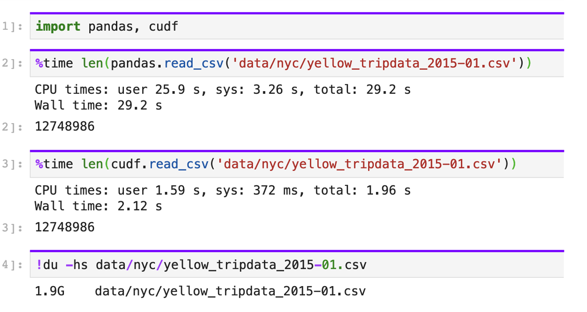cuDF Benchmarks
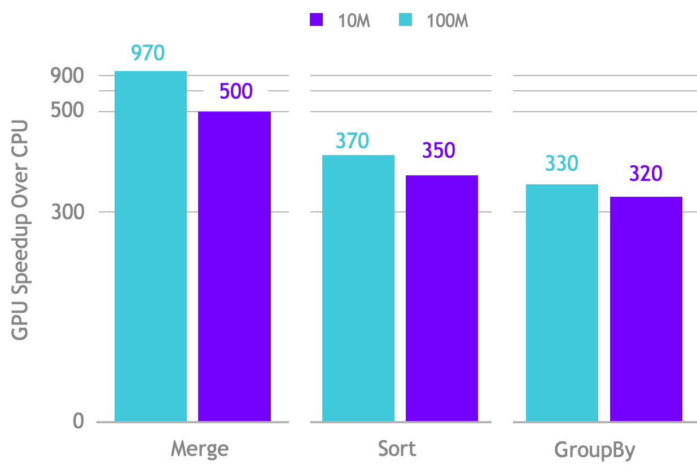Random Forests
Dask cuML implementation
from cuml.dask.common import utils as dask_utils
from dask.distributed import Client, wait
from dask_cuda import LocalCUDACluster
import dask_cudf
from cuml.dask.ensemble import RandomForestClassifier as cumlDaskRF
# This will use all GPUs on the local host by default
cluster = LocalCUDACluster(threads_per_worker=1)
c = Client(cluster)
# Query the client for all connected workers
workers = c.has_what().keys()
n_workers = len(workers)
n_streams = 8 # Performance optimization
# Data parameters
train_size = 100000
test_size = 1000
n_samples = train_size + test_size
n_features = 20
# Random Forest building parameters
max_depth = 12
n_bins = 16
n_trees = 1000
# Generate Data on host
X, y = datasets.make_classification(n_samples=n_samples, n_features=n_features,
n_clusters_per_class=1, n_informative=int(n_features / 3),
random_state=123, n_classes=5)
y = y.astype(np.int32)
X_train, X_test, y_train, y_test = model_selection.train_test_split(X, y, test_size=test_size)
n_partitions = n_workers
# First convert to cudf (with real data, you would likely load in cuDF format to start)
X_train_cudf = cudf.DataFrame.from_pandas(pd.DataFrame(X_train))
y_train_cudf = cudf.Series(y_train)
# Partition with Dask
# In this case, each worker will train on 1/n_partitions fraction of the data
X_train_dask = dask_cudf.from_cudf(X_train_cudf, npartitions=n_partitions)
y_train_dask = dask_cudf.from_cudf(y_train_cudf, npartitions=n_partitions)
# Persist to cache the data in active memory
X_train_dask, y_train_dask = \
dask_utils.persist_across_workers(c, [X_train_dask, y_train_dask], workers=workers)
cuml_model = cumlDaskRF(max_depth=max_depth, n_estimators=n_trees, n_bins=n_bins, n_streams=n_streams)
cuml_model.fit(X_train_dask, y_train_dask)
wait(cuml_model.rfs) # Allow asynchronous training tasks to finish
Random Forests
Forest Inference Library implementation
from cuml import ForestInference
fm = ForestInference.load(filename=model_path,
algo='BATCH_TREE_REORG',
output_class=True,
threshold=0.50,
model_type='xgboost')
# perform prediction on the model loaded from path
fil_preds = fm.predict(X_validation)
Hyper Parameter Optimization w/ RAPIDS
Today we learned!
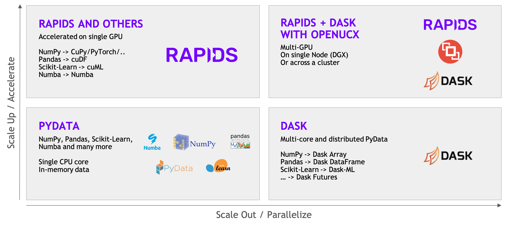